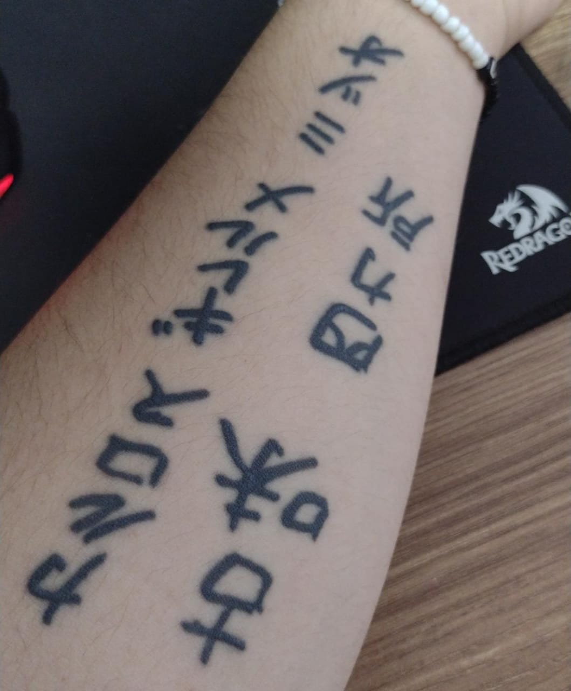
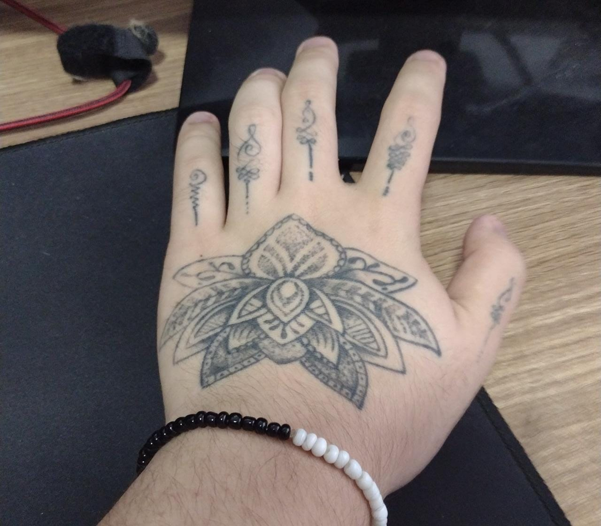

De: Carlos G. M. K. Shikasho
Tatuagens
|
Desde sempre eu tenho uma paixão por tatuagens, desde o jeito em que os desenhos são pensados
para encaixarem no corpo até a execução dela. A tatuagem ao lado foi a minha primeira, onde minha vó escreveu meu nome. |
 |
|  | Essa segunda representa uma flor de lótus. No simbolismo budista, o significado mais importante da flor de lótus é pureza do corpo e da mente. A água lodosa que acolhe a planta é associada ao apego e aos desejos carnais, e a flor imaculada que desabrocha sobre a água em busca de luz é a promessa de pureza e elevação espiritual. |